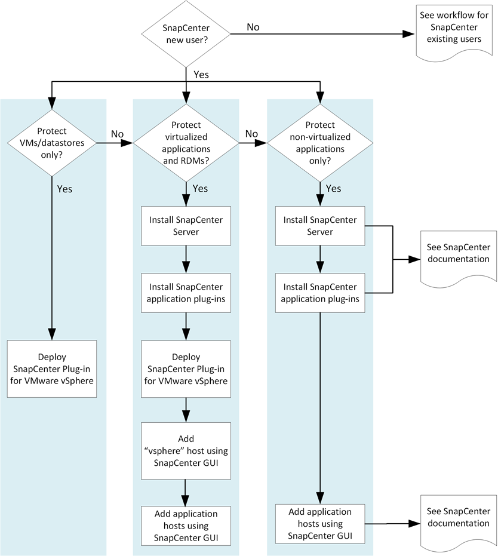

Konzepte
Konzepte
Die deutsche Sprachversion wurde als Serviceleistung für Sie durch maschinelle Übersetzung erstellt. Bei eventuellen Unstimmigkeiten hat die englische Sprachversion Vorrang.
Implementierungs-Workflow für neue Benutzer
Beitragende
 Änderungen vorschlagen
Änderungen vorschlagen
Wenn Sie SnapCenter noch nicht verwendet haben und über keine SnapCenter-Backups verfügen, können Sie mit dem folgenden Workflow beginnen.
